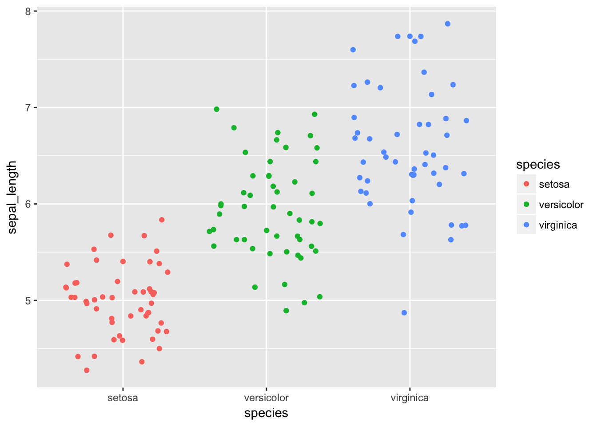
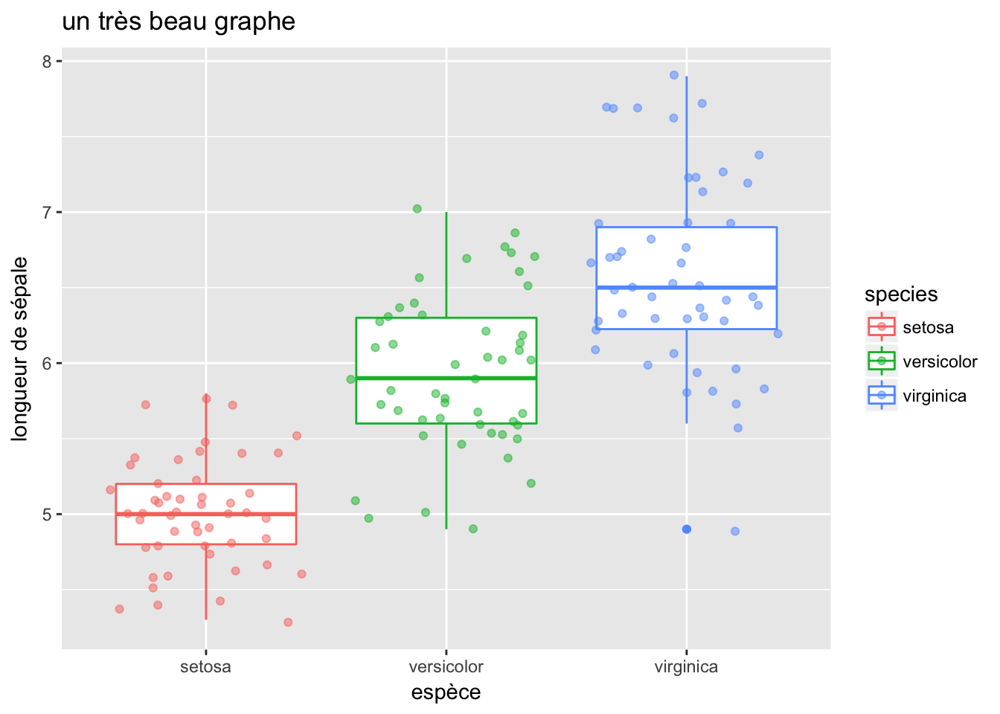
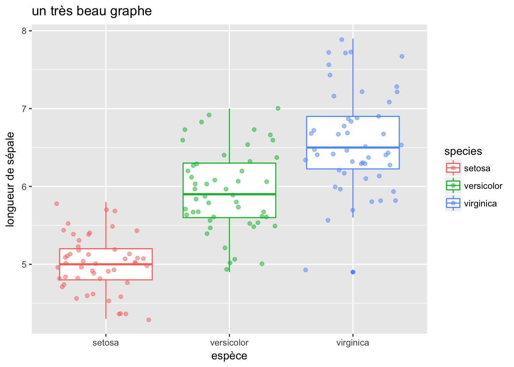
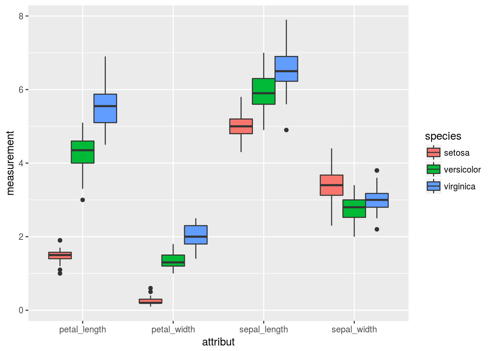
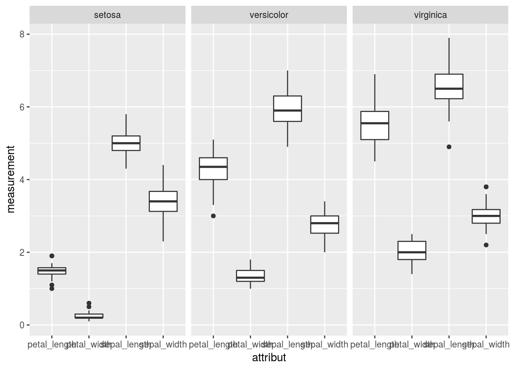
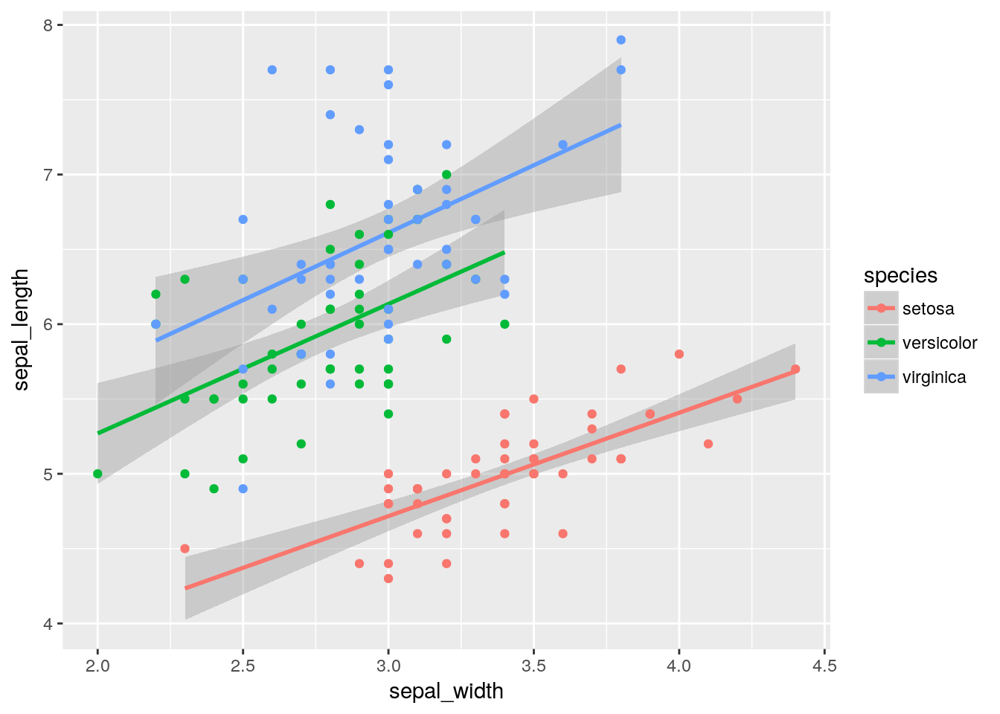
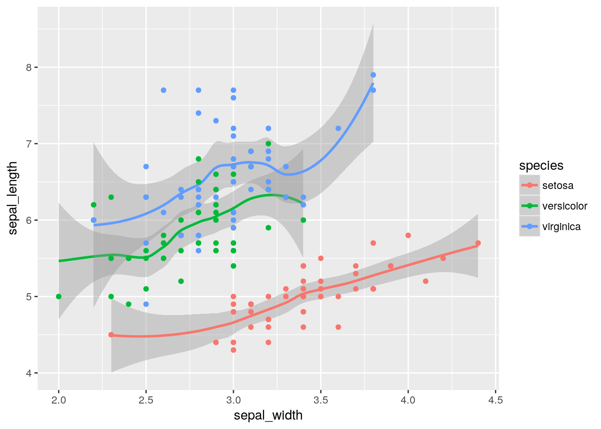
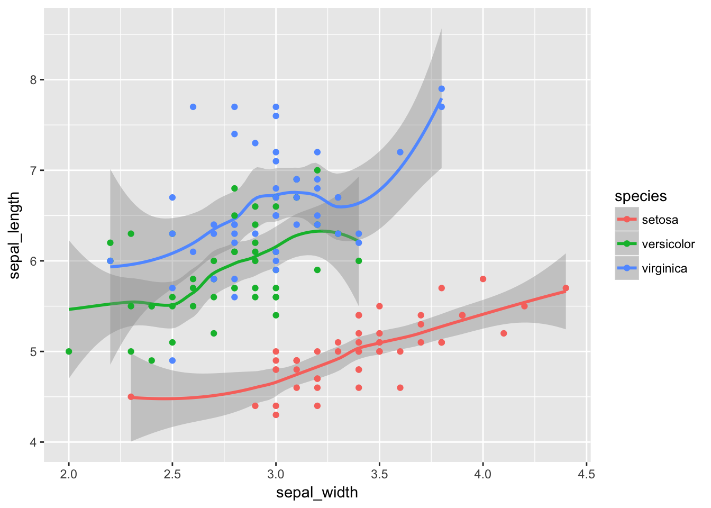

Chapitre 6 Découverte du tidyVerse
6.1 Motivations
6.1.1 Analyse de données

processus d’analyse
- import: récupération des données
- tidy: mise en forme (tableau individus variables)
- transform: suppression/création/filtrage de variables/individus
- visualization: représentation des données et validation/illustration de l’analyse
- model: ajustement statistique
- communication: diffusion des résultats (page web / présentation / article)
6.1.2 Tidy data
Les données collectées ne sont (jamais) sous forme canonique pour le statisticiens.
“Happy families are all alike; every unhappy family is unhappy in its own way.” –– Leo Tolstoy
“Tidy datasets are all alike, but every messy dataset is messy in its own way.” –– Hadley Wickham
 Intérêt
Intérêt
- facilite la manipulation, la visualisation et la modélisation
- une structure commune, utilisée par les packages du tydiverse
- Philosophie de représentation des données (indépendante de R)
6.1.3 Tidy vs non tidy: exemple
table2## # A tibble: 12 x 4
## country year type count
## <chr> <int> <chr> <int>
## 1 Afghanistan 1999 cases 745
## 2 Afghanistan 1999 population 19987071
## 3 Afghanistan 2000 cases 2666
## 4 Afghanistan 2000 population 20595360
## 5 Brazil 1999 cases 37737
## 6 Brazil 1999 population 172006362
## 7 Brazil 2000 cases 80488
## 8 Brazil 2000 population 174504898
## 9 China 1999 cases 212258
## 10 China 1999 population 1272915272
## 11 China 2000 cases 213766
## 12 China 2000 population 1280428583table1## # A tibble: 6 x 4
## country year cases population
## <chr> <int> <int> <int>
## 1 Afghanistan 1999 745 19987071
## 2 Afghanistan 2000 2666 20595360
## 3 Brazil 1999 37737 172006362
## 4 Brazil 2000 80488 174504898
## 5 China 1999 212258 1272915272
## 6 China 2000 213766 12804285836.2 Les packages du tidyverse (Wickham 2017)
tibble: structure de donnéesreadr: lecture de donnéestidyr(Wickham and Henry 2017): tidyficationdplyr(Wickham et al. 2017) : transformation/ “wrangling”purrr: programmation fonctionnelle / traitement successifggplot2(Wickham and Chang 2016) : visualisation
6.2.1 readr
Import de données et création de tibble, version amélioré des data.frame (+ performant que les fonction de base)
iris <- read.csv("data/iris.csv")
head(iris)## sepal_length sepal_width petal_length petal_width species
## 1 5.1 3.5 1.4 0.2 setosa
## 2 4.9 3.0 1.4 0.2 setosa
## 3 4.7 3.2 1.3 0.2 setosa
## 4 4.6 3.1 1.5 0.2 setosa
## 5 5.0 3.6 1.4 0.2 setosa
## 6 5.4 3.9 1.7 0.4 setosairis <- readr::read_csv("data/iris.csv")
iris## # A tibble: 150 x 5
## sepal_length sepal_width petal_length petal_width species
## <dbl> <dbl> <dbl> <dbl> <chr>
## 1 5.1 3.5 1.4 0.2 setosa
## 2 4.9 3.0 1.4 0.2 setosa
## 3 4.7 3.2 1.3 0.2 setosa
## 4 4.6 3.1 1.5 0.2 setosa
## 5 5.0 3.6 1.4 0.2 setosa
## 6 5.4 3.9 1.7 0.4 setosa
## 7 4.6 3.4 1.4 0.3 setosa
## 8 5.0 3.4 1.5 0.2 setosa
## 9 4.4 2.9 1.4 0.2 setosa
## 10 4.9 3.1 1.5 0.1 setosa
## # ... with 140 more rows6.2.2 tidyr
Fonctions de mise au format tidy
Évolution des fonctions classiques type reshape
- fonctions
spread,gather,unite,separate
iris_sepal <- add_column(iris, ind = 1:nrow(iris))
iris_sepal <- select(iris_sepal, ind, sepal_length, sepal_width, species)
iris_sepal <- gather(iris_sepal, key="attribute", value="measure", -species, -ind)
iris_sepal <- arrange(iris_sepal, ind)
iris_sepal## # A tibble: 300 x 4
## ind species attribute measure
## <int> <chr> <chr> <dbl>
## 1 1 setosa sepal_length 5.1
## 2 1 setosa sepal_width 3.5
## 3 2 setosa sepal_length 4.9
## 4 2 setosa sepal_width 3.0
## 5 3 setosa sepal_length 4.7
## 6 3 setosa sepal_width 3.2
## 7 4 setosa sepal_length 4.6
## 8 4 setosa sepal_width 3.1
## 9 5 setosa sepal_length 5.0
## 10 5 setosa sepal_width 3.6
## # ... with 290 more rows6.2.3 dplyr
Fonctions de transformation et manipulation de données
select: sélection variablesfilter: sélection d’observationsarrange: réordonner les observationsmutate: créer de nouvelles variables à partir d’existantesummarize: résumé de plusieurs variables
et aussi rename, group_by
by_species <- group_by(iris, species)
dplyr::summarize(by_species, moyenne = mean(sepal_length))## # A tibble: 3 x 2
## species moyenne
## <chr> <dbl>
## 1 setosa 5.006
## 2 versicolor 5.936
## 3 virginica 6.5886.2.4 purrr
- Définition de l’opérateur pipe
%>%pour “enchaîner” les traitement sur untibble - Force à la programmation fonctionnelle (une fonction = un argument, une sortie)
iris_sepal <- iris %>% add_column(ind = 1:nrow(iris)) %>%
select(ind, sepal_length, sepal_width, species) %>%
gather(key="attribute", value="measure", -species, -ind) %>%
arrange(ind)
iris_sepal## # A tibble: 300 x 4
## ind species attribute measure
## <int> <chr> <chr> <dbl>
## 1 1 setosa sepal_length 5.1
## 2 1 setosa sepal_width 3.5
## 3 2 setosa sepal_length 4.9
## 4 2 setosa sepal_width 3.0
## 5 3 setosa sepal_length 4.7
## 6 3 setosa sepal_width 3.2
## 7 4 setosa sepal_length 4.6
## 8 4 setosa sepal_width 3.1
## 9 5 setosa sepal_length 5.0
## 10 5 setosa sepal_width 3.6
## # ... with 290 more rows6.2.5 ggplot2
Outil de visualisation
ggplot(iris, mapping = aes(x= species, y=sepal_length)) +
geom_boxplot()
ggplot(iris, mapping = aes(x= species, y=sepal_length, color = species)) +
geom_jitter()
ggplot(iris, mapping = aes(x= species, y=sepal_length, colour=species)) +
geom_boxplot() + geom_jitter(alpha=0.5) +
labs(title="un très beau graphe", x="espèce", y="longueur de sépale")
ggplot(iris, mapping = aes(x= species, fill=species)) +
geom_bar() + coord_polar() + theme_bw()
by_attr <- gather(iris, key = "attribut", value="measurement",
sepal_length,sepal_width, petal_length,petal_width)
head(attr)##
## 1 .Primitive("attr")ggplot(by_attr, mapping = aes(x=attribut, y=measurement, fill=species)) +
geom_boxplot()  ```
ggplot(by_attr, mapping = aes(x=attribut, y=measurement)) +
geom_boxplot() + facet_grid(~species)
ggplot(by_species, mapping = aes(x=sepal_width, y=sepal_length, group=species, colour=species)) +
geom_smooth(method=lm) + geom_point()
ggplot(by_species, mapping = aes(x=sepal_width, y=sepal_length, group=species, colour=species)) +
geom_smooth(method=loess) + geom_point()
6.3 Exercice
Lisez les données suivantes à l’adresse http://stat405.had.co.nz/data/pew.txt
- Transformez en une
tibbleà trois colonnesreligionincomeeffectif - Pour les durs: calculez le salaire moyen par religion (après conversion en numerique du salaire)
Pour vous aider :
http://www.rstudio.com/wp-content/uploads/2015/02/data-wrangling-cheatsheet.pdf
6.3.1 Solution
pew <- readr::read_delim(file="http://stat405.had.co.nz/data/pew.txt", delim="\t")## Parsed with column specification:
## cols(
## religion = col_character(),
## `<$10k` = col_integer(),
## `$10-20k` = col_integer(),
## `$20-30k` = col_integer(),
## `$30-40k` = col_integer(),
## `$40-50k` = col_integer(),
## `$50-75k` = col_integer(),
## `$75-100k` = col_integer(),
## `$100-150k` = col_integer(),
## `>150k` = col_integer(),
## `Don't know/refused` = col_integer()
## )pew <- read_tsv(file="http://stat405.had.co.nz/data/pew.txt")## Parsed with column specification:
## cols(
## religion = col_character(),
## `<$10k` = col_integer(),
## `$10-20k` = col_integer(),
## `$20-30k` = col_integer(),
## `$30-40k` = col_integer(),
## `$40-50k` = col_integer(),
## `$50-75k` = col_integer(),
## `$75-100k` = col_integer(),
## `$100-150k` = col_integer(),
## `>150k` = col_integer(),
## `Don't know/refused` = col_integer()
## )tidy_pew <- pew %>% gather(key="income", value="effectif", -religion)
convert <- function(income) {
convert.one <- function(x) {
switch(x,
"<$10k" = 5000,
"$10-20k" = 15000,
"$20-30k" = 25000,
"$30-40k" = 35000,
"$40-50k" = 45000,
"$50-75k" = 62500,
"$75-100k"= 87250,
"$100-150k" = 125000,
">150k" = 200000,
NA
)
}
sapply(income, convert.one)
}
tidy_pew %>% mutate(income.numeric = convert(income)) %>%
group_by(religion) %>%
summarise(mean.income = weighted.mean(income.numeric, effectif, na.rm=TRUE)) %>%
arrange(desc(mean.income))## # A tibble: 18 x 2
## religion mean.income
## <chr> <dbl>
## 1 Hindu 109776.14
## 2 Jewish 108197.60
## 3 Atheist 85886.67
## 4 Orthodox 83303.45
## 5 Buddhist 79508.40
## 6 Agnostic 79495.89
## 7 Mainline Prot 73038.95
## 8 Other Christian 72617.12
## 9 Don’t know/refused 72049.68
## 10 Other Faiths 70267.20
## 11 Catholic 70061.73
## 12 Other World Religions 69389.71
## 13 Mormon 68732.91
## 14 Muslim 65409.57
## 15 Unaffiliated 65361.98
## 16 Evangelical Prot 58589.36
## 17 Jehovah's Witness 48588.48
## 18 Historically Black Prot 47697.61References
Wickham, Hadley. 2017. Tidyverse: Easily Install and Load ’Tidyverse’ Packages. https://CRAN.R-project.org/package=tidyverse.
Wickham, Hadley, and Lionel Henry. 2017. Tidyr: Easily Tidy Data with ’Spread()’ and ’Gather()’ Functions. https://CRAN.R-project.org/package=tidyr.
Wickham, Hadley, Romain Francois, Lionel Henry, and Kirill Müller. 2017. Dplyr: A Grammar of Data Manipulation. https://CRAN.R-project.org/package=dplyr.
Wickham, Hadley, and Winston Chang. 2016. Ggplot2: Create Elegant Data Visualisations Using the Grammar of Graphics. https://CRAN.R-project.org/package=ggplot2.